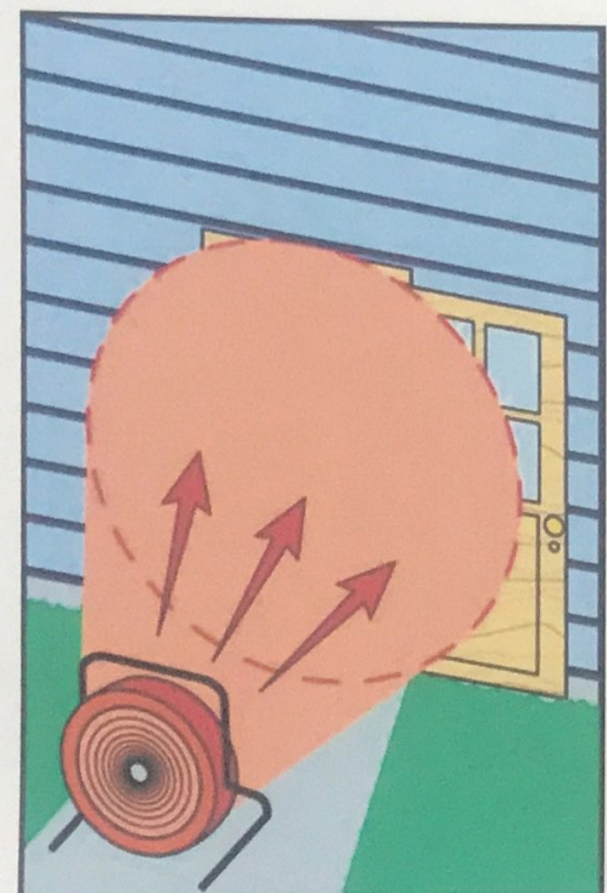

Objetivos
Al finalizar la Lección, el participante será capaz de:
- Definir el concepto de ventilación.
- Definir los tipos de ventilación.
- Definir las condiciones de aplicación de ventilación.
- Listar los peligros de la ventilación.
Principios y consideraciones
Definiciones
Ventilación.- Consiste en la extracción sistemática del aire caliente, el humo y los gases de una estructura y su sustitución por aire fresco.
Este proceso facilita la entrada de los bomberos y mejora las condiciones de seguridad durante las actuaciones de rescate y lucha contra incendios.
Ventajas de la ventilación
- Desplaza el humo.
- Permite una mejor visibilidad.
- Permite el ingreso de aire fresco.
- Reduce los riesgos del Flashover o Backdraft.
Ventilación durante el rescate
- Permite la habilitación de vías de escape para los ocupantes.
- Elimina el peligro respiratorio generado por humo o gases calientes a posibles víctimas.
Esquema de ventilación
Rótulos de la lámina:
- Agujero de ventilación.
- Puerta abierta.
Descripción complementaria de la imagen (no es texto del manual): esquema de una estructura con un agujero de ventilación y una puerta abierta.

Ventilación durante el control de incendios
- Necesario para reducir riesgos a los bomberos.
- Permite ubicar el foco y visualizar riesgos adicionales.
- Evita la propagación por convección.
Esquemas de ventilación
La lámina identifica dos esquemas con las letras A y B.
Descripción complementaria de la imagen (no es texto del manual): dos secciones esquemáticas de una estructura.


Consideraciones
- ¿Permiten las condiciones estructurales ventilar?
- ¿Es necesario ventilar ahora?
- ¿Dónde se necesita ventilar?
- ¿Qué tipo de ventilación debe utilizarse?
Antes de ventilar
- Saber por dónde se va a colocar el ventilador.
- Saber por dónde va a salir el humo.
- Tener un grupo de ataque listo para entrar y controlar el foco o los focos.
- Tener un grupo de rescate para extracción de víctimas.
Importante
- Considerar que al inicio de la ventilación, el tamaño del fuego puede incrementarse considerablemente.
- El humo desplazado puede ingresar a otras áreas del incidente afectando a personas que no estaban comprometidas inicialmente.

Tipos de ventilación
- Ventilación horizontal.
- Ventilación vertical.
- Ventilación forzada.
Ventilación horizontal
La ventilación horizontal consiste en ventilar el calor, el humo y los gases a través de aperturas en paredes como puertas y ventanas.
El viento desempeña un papel importante en la ventilación.
Descripción complementaria de la imagen (no es texto del manual): esquema de una estructura con aberturas laterales, humo y fuego en el interior.

Rótulos de la lámina:
- Dirección del viento.
- Contra el viento (Barlovento).
- A favor del viento (Sotavento).
- Aire fresco.

Ventilación vertical
La ventilación vertical suele consistir en abrir aperturas en la parte superior de una estructura con el propósito de que los gases y humos calientes puedan salir a la atmósfera.

Rótulos de la lámina:
- Abertura en techo.
- Al menos [1.2 m x 1.2 m].

Ventilación forzada
La ventilación forzada se lleva a cabo de forma mecánica (ventiladores y/o extractores de humo) o hidráulica (con chorros de agua nebulizada).
Descripción complementaria de la imagen (no es texto del manual): esquema de movimiento de humo en una estructura con aplicación mecánica.

Rótulos de la lámina:
Mecánica


Hidráulica
- Flujo nebulizado (cubriendo 85% a 90% de la abertura).
- Punta de la boquilla (al menos 60 cm de la abertura).

Advertencia
No utilice nunca ningún tipo de chorro contraincendios a través de un agujero de ventilación durante actuaciones ofensivas.
Esto detiene el proceso de ventilación y pone al personal en el interior en grave peligro.
Ventilación: aplicación correcta e incorrecta
Rótulos de la lámina:
- Aplicación Correcta.
- Aplicación Incorrecta.